Blacksite Ruins


Blacksite Ruins is a stealth level where a player, falsely accused of espionage, must sneak into a secure facility to uncover the real spy within their own organization. Moving through guarded hallways and restricted areas, players must stay out of sight, reach the computer room, grab the data they need, and escape before getting caught. With no way to take out guards, players must rely entirely on awareness, patience, and smart movement to progress through the level.
• Solo Project
• Role: Level Designer & Game Designer
• Built in Unreal Engine 5.6.1
• 4 Week Development
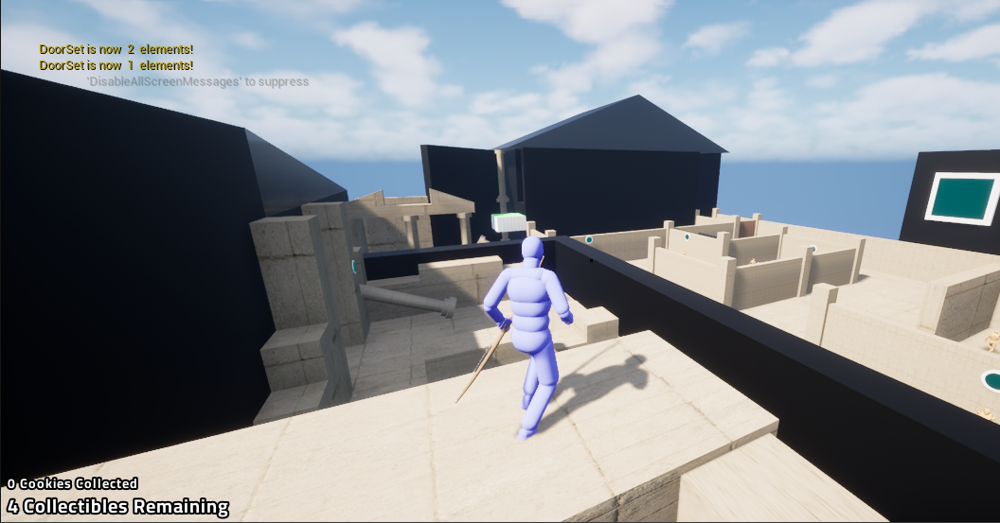
Before blocking out the level digitally, several initial sketches and layout ideas were created to brainstorm how the player would progress through the level. Early planning focused on visualizing the overall structure, guard placement, and key areas the player would need to navigate. A macro chart was also developed to map out the pacing and flow of the level, helping establish how mechanics and tension would be introduced gradually before moving into full production.
The level was structured around several phases, each responsible for establishing new mechanics and building tension. Every phase was planned to introduce something new to the player or building from previous game mechanics, ensuring the experience felt progressive and intentional from start to finish.
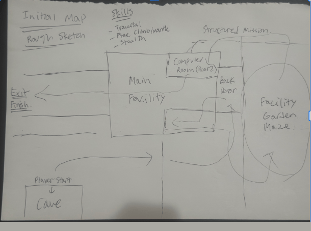
A macro chart was created to guide the overall structure of the level, tracking key elements such as phase, theme, mood, gameplay beats, goals, and mechanics. It kept the bigger picture in focus throughout the design process, making it a simple yet effective tool for organizing ideas and ensuring each phase built toward a sense of excitement and accomplishment as players explored the facility. --- Click on Image for full Macro Chart ---
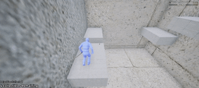
As stated in the macro chart, the main goal of Phase 1 is to ensure players can control their character and get comfortable with the core mechanics. This section focuses on introducing traversal, climbing, mantling, and stealth — giving players the space to learn and practice before any real challenge is introduced.
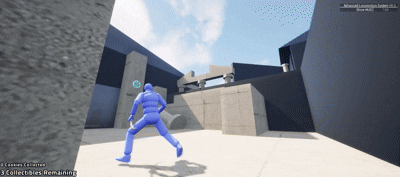
Phase 2 introduces two of the most crucial mechanics in the level — the energy bow and energy buttons. Players must learn to shoot buttons with the bow to activate floors, doors, and walls, as these mechanics are essential to progressing through the rest of the stage. This phase combines the challenge of locating the facility's back door while naturally easing players into understanding how the bow and button system works.
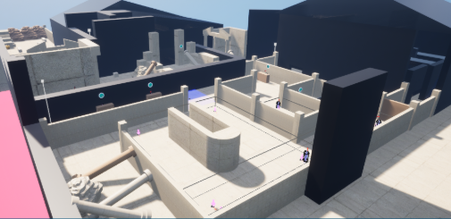
Phase 3 takes players inside the facility and through a back garden maze, where previously introduced bow and button mechanics are put to use. Players must navigate the maze by shooting buttons to open paths and progress toward another facility building that holds the access key to the computer room — building on what was learned while raising the stakes.
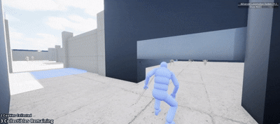
Phase 4 challenges players to navigate a separate facility building and obtain the hidden access key. Stealth becomes critical here as players must avoid detection while searching for the key, before using it to finally gain entry into the computer room — the main objective they have been working toward throughout the level.
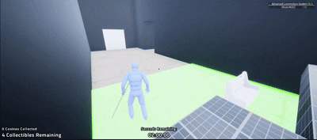
After accessing the computer room and stealing the data, a countdown timer starts and players must escape the facility before time runs out. This final phase puts everything to the test — using all mechanics learned throughout the level under pressure, navigating a challenging parkour sequence to get out in time. It serves as the ultimate test of everything the player has learned.
The level was initially built large in scale to allow room for adjustments, with the intention of scaling down if needed. Feedback from playtesting was positive — playtesters felt the overall size was well balanced and appreciated how the character proportion felt natural and in line with the facility blockout.
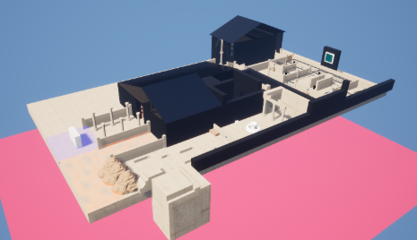
An issue identified during playtesting was that players who fell off platforms would fall endlessly without respawning. Death zones were added to address this, ensuring players are respawned promptly when falling out of bounds and keeping the experience from breaking immersion or causing unnecessary frustration.
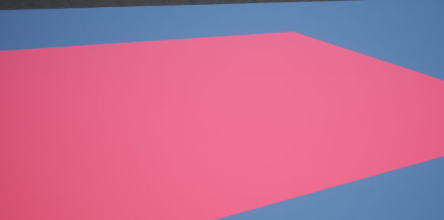
The level design process began with a simple blockout using basic blocks to establish layout, spacing, and gameplay flow. Once the structure was finalized, textures and theming were applied to fit the overall aesthetic of the game. The progression from blockout to final level clearly reflects how the design evolved from a functional foundation into a polished and visually cohesive experience.
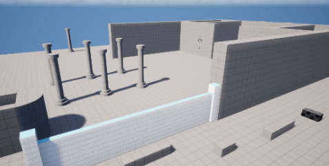
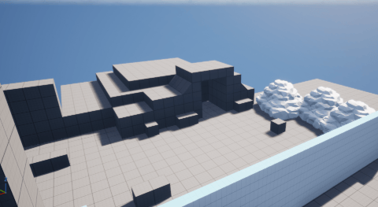
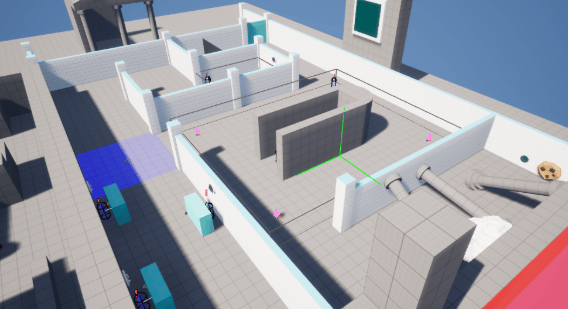
©2024 by Shion Lovelace.
All content, logos, and trademarks are the property of their respective owners.